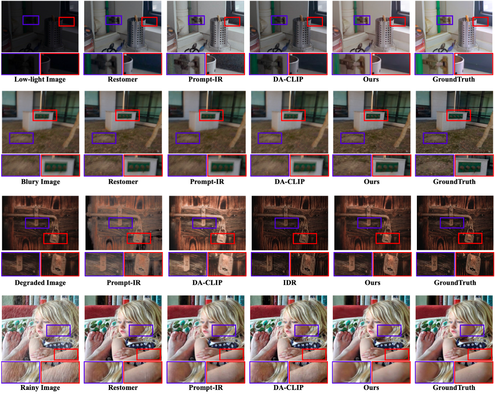
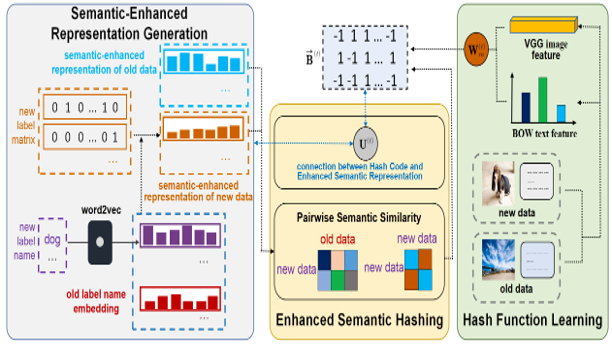

|
Xiao-Ming Wu (伍晓鸣) M.S. student School of Computer Science and Engineering Sun Yat-sen University Email: wuxm65@mail2.sysu.edu.cn |
BiographyI'm currently a second-year master student at Sun Yat-sen University, advised by Prof. Wei-Shi Zheng, where I develop the scientific ability and a good taste of it. Now I am also a visiting student in Macquarie university, enjoying an interesting research journey with Prof. Longbing Cao. Previously, I obtain my B.E. degree in Shandong University. At that time, I had my first attempt on scientific research and cultivate the interest in it, advised by Prof. Xin-Shun Xu and Prof. Xin Luo. Research is for curiosity and fun. I am interested in general deep learning topics, including algorithms, theories, systems and its applications on vision, language scenarios. My long-term goal is to build a strong, efficient (reach human-level), and safe (surpass human level) AI agent. Now I am mainly focusing on efficient embodied AI systems. Previously, I also conducted research on information retrieval. |
NewsOne paper accepted in CoRL 2024. One paper accepted in ICPR 2024. One paper accepted in ACM Multimedia 2024. One paper accepted in ECCV 2024 (my first-author work). Three papers accepted in CVPR 2024. One paper accepted in ICCV 2023 (my first-author work). One paper accepted in CVPR 2023. One paper accepted in CIKM 2022. One paper accepted in AAAI 2022 (my first-author work). One paper accepted in Pattern Recognition. |
Selected PublicationsBelow are my selected publications. (& means equal contribution, * refers to corresponding author.) |
|
|
PixelFade: Privacy-preserving Person Re-identification with Noise-guided Progressive Replacement
Delong Zhang, Yi-Xing Peng, Xiao-Ming Wu, Ancong Wu*, Wei-Shi Zheng. ACM Multimedia (MM), 2024. paper / code (Privacy Protection) We propose a two-step iterative method (PixelFade) for person privacy-preserving, with the partial replacement step to turn image into noise to resist recovery attack, and the constrain operation step to maintain Re-id semantics. |

|
An Economic Framework for 6-DoF Grasp Detection
Xiao-Ming Wu&, Jia-Feng Cai&, Jian-Jian Jiang, Dian Zheng, Yi-Lin Wei, Wei-Shi Zheng* European Conference on Computer Vision (ECCV), 2024 paper / code (6-DoF Grasp) We propose a new economic grasping framework for 6-DoF grasp detection to economize the training resource cost and meanwhile maintain effective grasp performance, which consists of a novel label selection strategy and a focal module to enable it. |
|  |
Selective Hourglass Mapping for Universal Image Restoration Based on Diffusion Model
Dian Zheng, Xiao-Ming Wu, Shuzhou Yang, Jian Zhang, Jian-Fang Hu, Wei-Shi Zheng* Computer Vision and Pattern Recognition (CVPR), 2024. paper / code (Image Restoration) We propose a diffusion-based universal image restoration model, with an assemble-then-separate (like the hourglass) mapping for multi-task training, to learn the shared information between different tasks. |

|
Dexterous Grasp Transformer
Guo-Hao Xu&, Yi-Lin Wei&, Dian Zheng, Xiao-Ming Wu, Wei-Shi Zheng* Computer Vision and Pattern Recognition (CVPR), 2024. paper / code (Dexterous Grasp) We propose a new transformer-based framework for dexterous grasp generation, capable of predicting a diverse set of feasible grasp poses only in one pass. |

|
Single-View Scene Point Cloud Human Grasp Generation
Yan-Kang Wang, Chengyi Xing, Yi-Lin Wei, Xiao-Ming Wu, Wei-Shi Zheng* Computer Vision and Pattern Recognition (CVPR), 2024. paper / code (Human Grasp) We explore a new task of generating human grasps based on single-view scene point clouds. And we design a new diffusion-based baseline and a new dataset for this novel task. |
|
Estimator Meets Equilibrium Perspective: A Rectified Straight Through Estimator for Binary Neural Networks Training
Xiao-Ming Wu, Dian Zheng, Zuhao Liu, Wei-Shi Zheng* International Conference on Computer Vision (ICCV), 2023 paper / code (Binary Neural Networks) We propose a new perspective to view the binary neural network training: equilibrium between estimating error and gradient stability, and design a simple and effective gradient estimator (ReSTE) to balance it well. |
|
|  |
Online Enhanced Semantic Hashing Towards Effective and Efficient Retrieval for Streaming Multi-Modal Data
Xiao-Ming Wu, Xin Luo*, Yu-Wei Zhan, Chen-Lu Ding, Zhen-Duo Chen, Xin-Shun Xu AAAI Conference on Artificial Intelligence (AAAI), 2022 paper / code (Hashing Retrieval) We explore a new task, incremental multi-modal hashing, and introduce semantics to solve this task, handling the dimension mismatching problem and mitigating the inconsistent problem that occurs when new classes come. |
Services and ActivitiesJournal Reviewer: Pattern Analysis and Machine Intelligence (TPAMI), Pattern Recognition (PR). Conference Reviewer: Computer Vision and Pattern Recognition (CVPR) 2024, ACM Multimedia (MM) 2024. |
Selected Awards
National Scholarship of China for Graduate Student (研究生国家奖学金), 2023
First Prize, Academic Scholarship of Sun Yat-Sen University (中山大学学业一等奖学金), 2022, 2023
Honorable Bachelor Degree of Shandong University (山东大学荣誉学士学位), 2022
National Scholarship of China for Undergraduate Student (本科生国家奖学金), 2019, 2021
First Prize, Academic Scholarship of Shandong University (山东大学学业一等奖学金), 2019, 2020, 2021
|